‘잇다’는 세 가지를 잇습니다
‘언제나 어디나 누구나 잇다(IT-DA) 북스’ — 이동초 학교도서관의 독서 인문교육 브랜드입니다. 읽고(IT), 배우고(DA), 함께 자라는(IT-DA) 한 해의 이야기를 소개해요.
시간과 공간의 연결
독서로, AI 바이브 코딩, 메타버스 도서관(ZEP) 등 에듀테크로 학교와 가정, 디지털과 아날로그를 잇는 독서 환경을 만듭니다.
학습과 정보의 연결
책과 AI의 교차 검증을 활용한 정보활용수업, 학급별 온책읽기, 바이브 코딩 독후활동으로 배움을 넓힙니다.
책으로 하나 되는 이동
학생·교사·학부모가 함께하는 독서 문화로 평생 독서 습관을 길러요.
시간과 공간을 잇는 메타버스 도서관
학교 건물 안에만 있던 도서관을 온라인으로 확장했어요. 메타버스 플랫폼 ZEP 속 우리 학교 도서관은 방학에도, 밤에도, 집에서도 열려 있습니다.
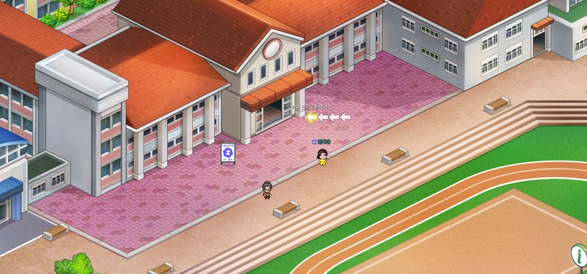
‘한울채 도서관’이 두 개로!
- 오프라인 한울채 도서관 — 직접 방문해 종이책 대출·반납, 조용한 독서
- 온라인 메타버스 도서관(ZEP) — 24시간 접속, 스마트폰·태블릿 QR 스캔으로 입장
- 오디오북 듣기 — 학년별 도서를 소리로 만나요
- 온라인 온책읽기 방탈출 — 읽은 책을 퀴즈로 풀며 탈출하는 방탈출 게임
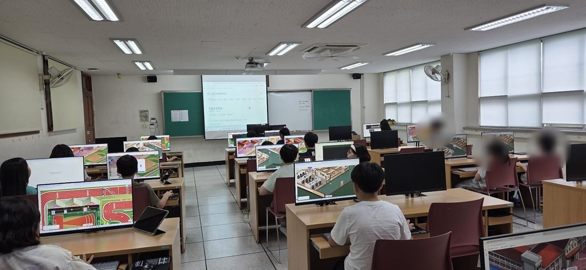
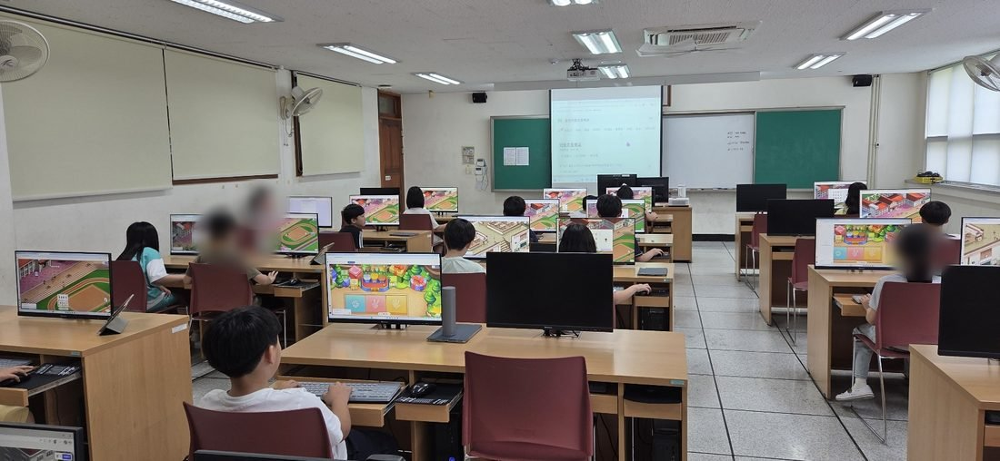
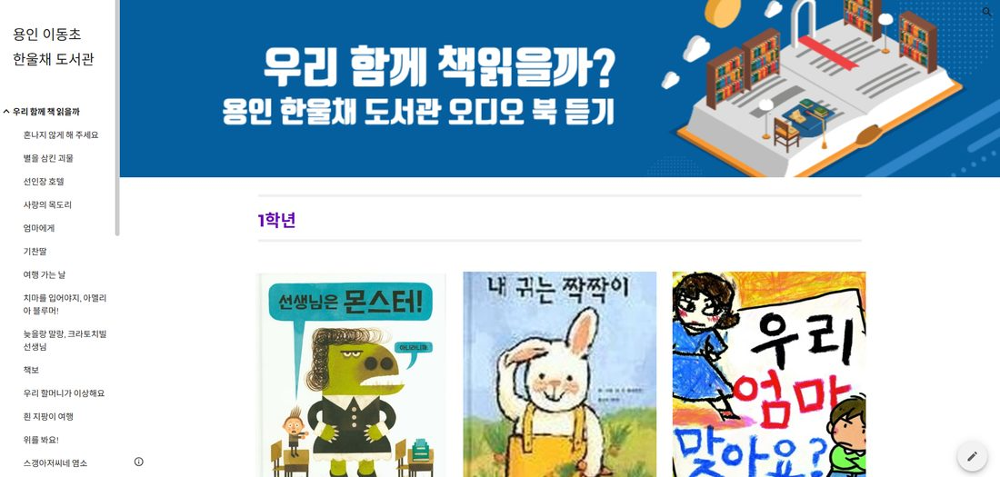
책과 AI를 함께 읽는 정보활용수업
모든 학년이 ‘온책읽기’를 10차시씩 운영해 총 150차시를 진행합니다. 책으로 읽고, AI로 확인하고, 직접 만들어 보는 수업이에요. 학년을 눌러 보세요.
총 차시
모든 학년 10차시씩 온책읽기 운영
학년 모두 참여
학년 수준에 맞춘 책과 활동
교차 검증
책과 AI의 답을 비교해 보는 힘
1학년 · 『여름 소리』
여름에 들리는 소리를 글자와 그림으로 표현한 그림책을 읽고, 내가 듣는 여름 소리와 모습을 태블릿으로 직접 그려 봤어요.
- 그림책 함께 읽으며 소리 흉내말 찾기
- 디지털 그리기 도구로 ‘나의 여름’ 표현
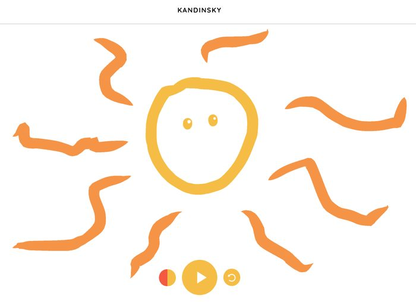
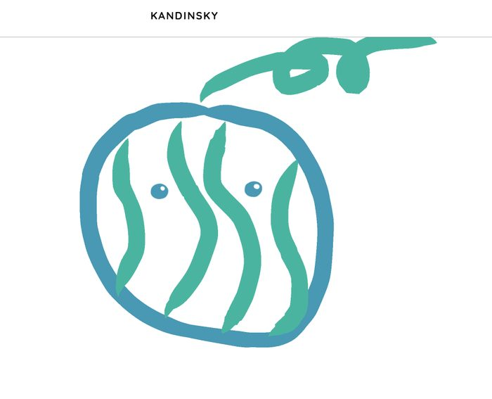
2학년 · 『돌돌 말아 김밥』
알록달록 김밥 재료들이 모여 맛있는 김밥이 되는 그림책을 읽고, 책 속 김밥을 교실놀이로 만났어요. 읽기 전에는 좋아하는 김밥 종류와 재료로 ‘인기투표’를 하며 책과 친해졌어요.
- 읽기 전: 김밥 종류·재료 인기투표
- 읽은 후: 김밥 재료 ‘찢기 빙고’
- 교실놀이 ‘김밥 말이 놀이’ — 재료 역할을 정하고, 술래가 “김밥 말아!” 외치며 부른 재료 친구들끼리 이동
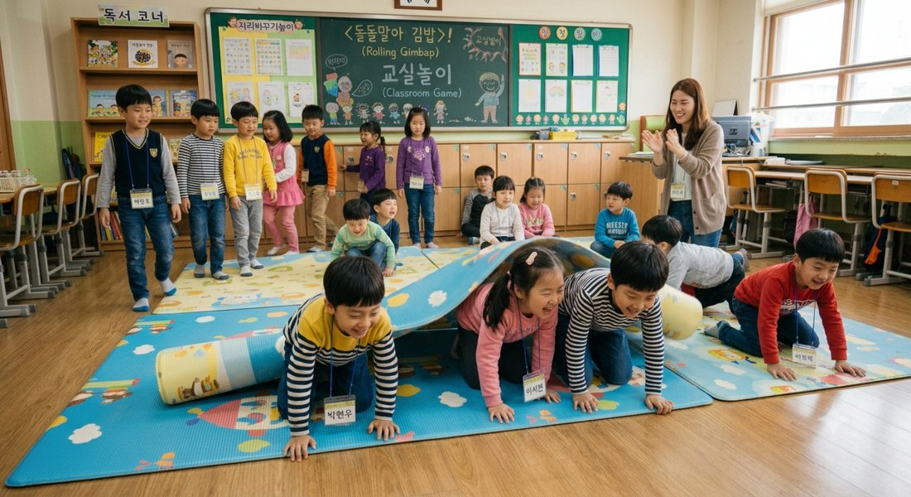
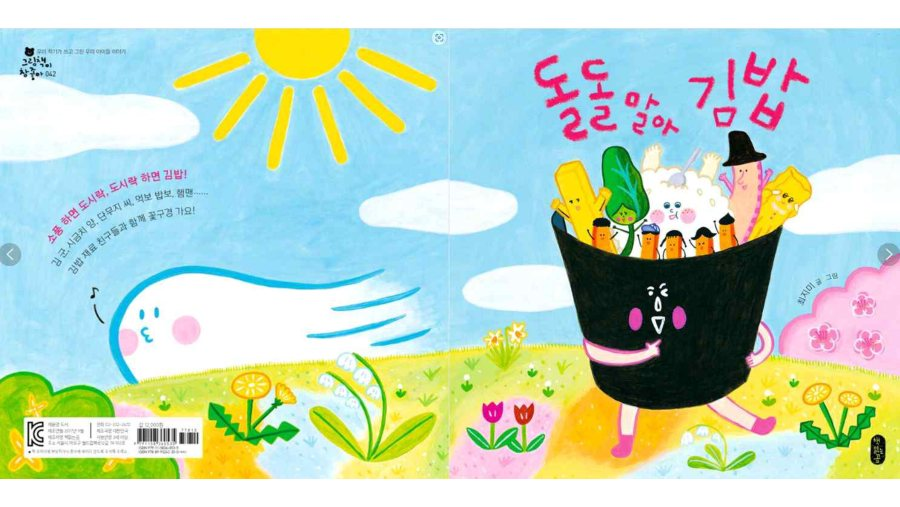
3학년 · 『한밤중 달빛식당』
『한밤중 달빛식당』을 함께 읽고 활동했어요. 이야기를 나누고, 나만의 달빛식당 메뉴를 만들어 봅니다.
- 책 속 이야기 나누기 + 활동지
- 나만의 달빛식당 메뉴 만들기
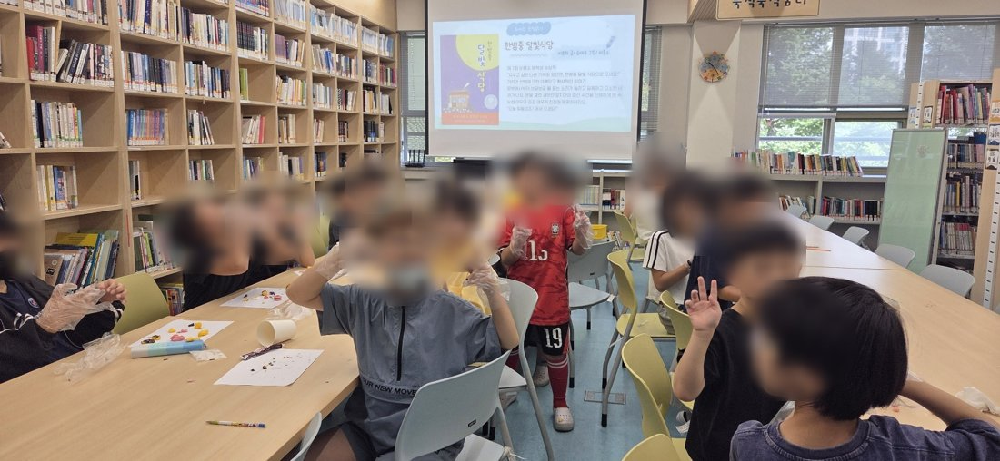
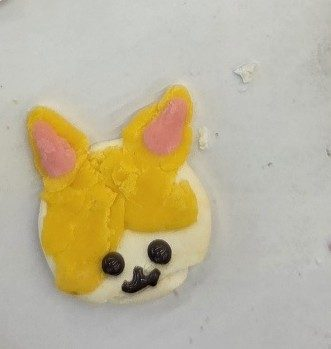
4학년 · 바이브 코딩 수업 대표 수업
『도깨비폰을 개통하시겠습니까?』를 읽고, 사람의 ‘기’를 살려 주는 앱을 AI(제미나이 캔버스)와 함께 만들었어요. 코딩을 몰라도 말(프롬프트)로 앱을 만드는 ‘바이브 코딩’입니다.
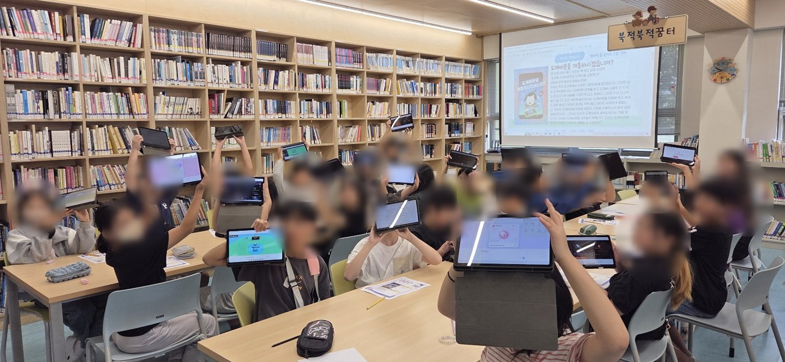
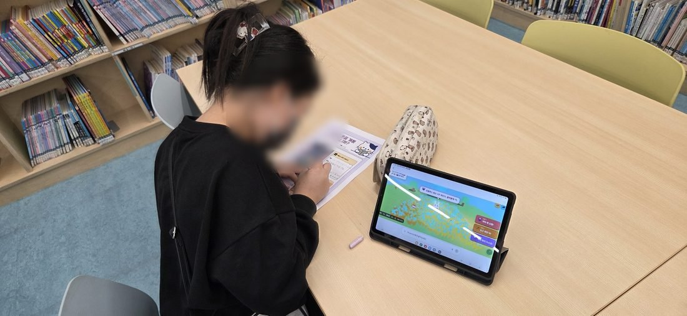
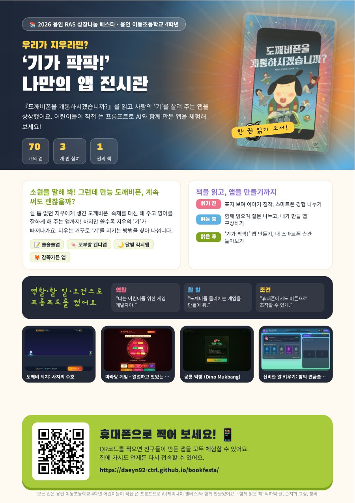
5학년 · ‘왜왜왜 동아리’ 정보활용수업 대표 수업
“불타는 숲의 미스터리, 진실을 밝혀라!” 학생들은 왜왜왜 탐정단이 되어 기후 위기의 원인을 추적합니다. 책과 AI 검색을 번갈아 쓰며 정보의 진위를 교차 검증해요.
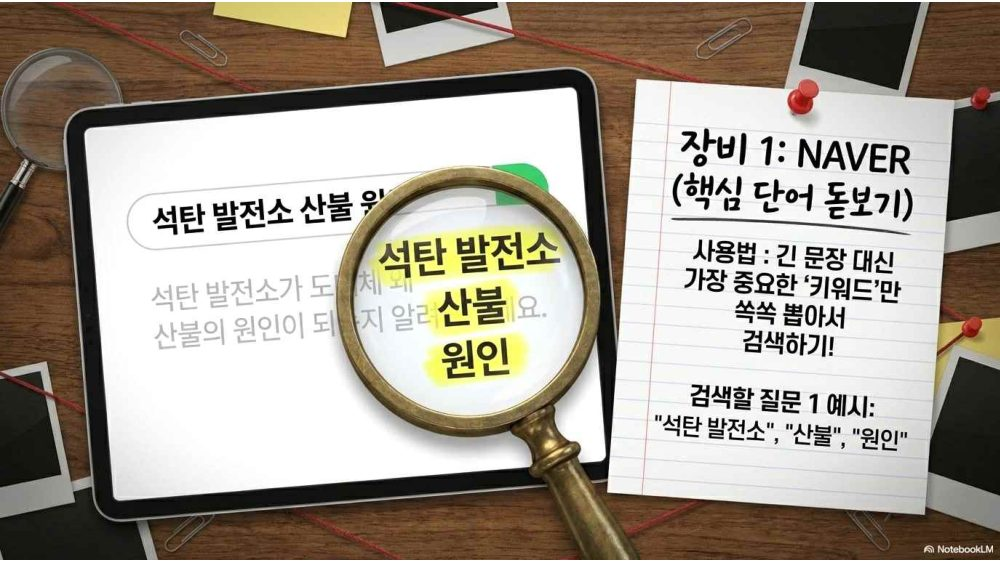
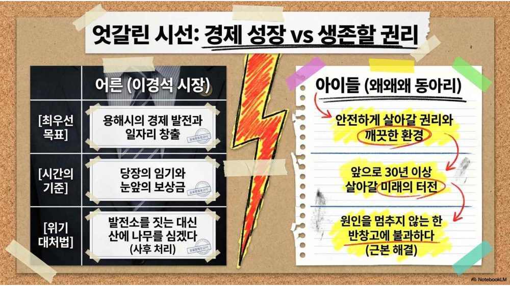
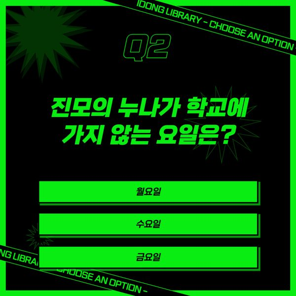
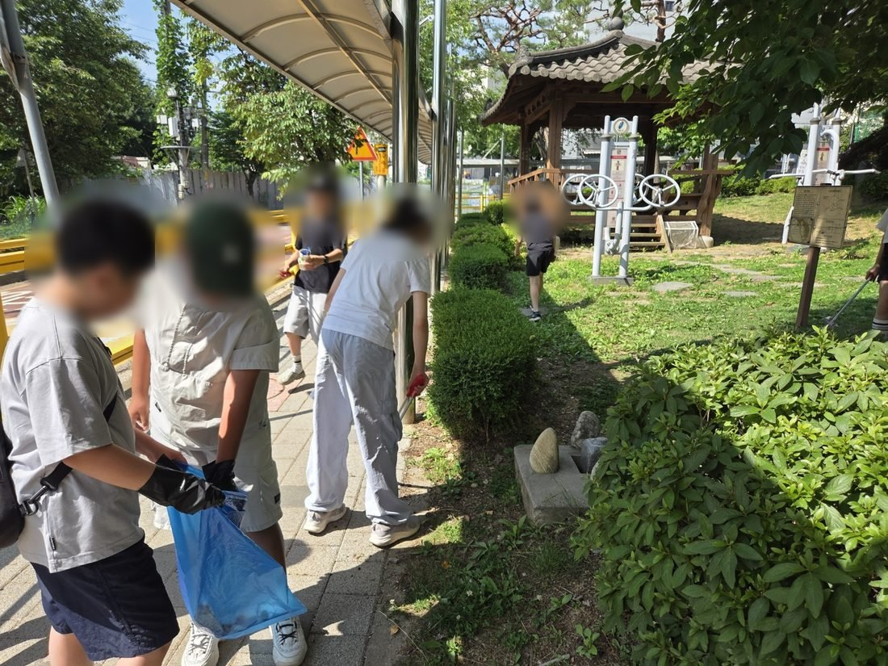
6학년 · 『돌 씹어 먹는 아이』
가족 사이의 비밀과 마음을 다룬 책을 읽고, AI로 ‘가족 비밀 상담 앱’을 만들었어요. 등장인물의 고민을 상담하는 앱을 기획하며 공감과 문제 해결력을 키웁니다.
- 책 읽고 인물의 고민 정리하기
- AI와 함께 ‘가족 상담사’ 앱 만들기
- 역할·할 일·조건으로 프롬프트 작성
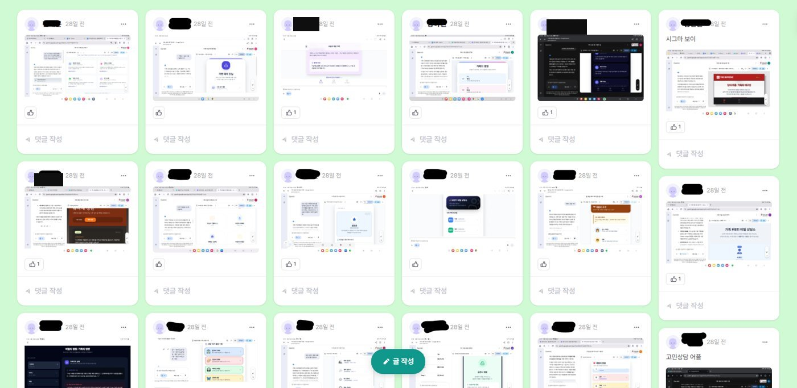
🔐 온책읽기 온라인 방탈출
학년별 읽기 도서를 퀴즈로 풀며 탈출하는 방탈출 게임! 도서관 이용법(1·2학년), 『겁보 만보』(3학년), 『재판정에 선 비둘기와 풀빵 할머니』(4학년), 왜왜왜 동아리(5학년), 『돌 씹어 먹는 아이』(6학년)로 읽기를 게임처럼 즐겨요.
책으로 하나 되는 이동
아침, 점심, 방과 후까지 — 일상 곳곳에 책이 있어요. 학생·교사·학부모·선배가 함께 평생 독서 습관을 길러 갑니다.
책으로 여는 아침
매일 아침독서 10분, 북모닝 & 북플릭스로 추천도서를 전시해요.
북돋움 챌린지
경기 북돋움 독서 챌린지! 도서관 곳곳에서 인증 사진을 남기며 읽는 학교를 만들어요.
사제동행 책 추천 릴레이
선생님들이 학생에게 책을 추천하고 이어 가는 릴레이예요.
북맘
매주 목요일 아침, 학부모님이 책을 읽어 주는 ‘북맘’.
책 읽어 주는 선배
도서부 선배가 후배에게 책을 읽어 줍니다. 도서부 추천 플레이리스트(YouTube)도 운영해요.
이동초 한석봉을 찾습니다
‘2026 마음챙김 손글씨 대회’(6/1~6/12). 인상 깊게 읽은 책 속 문장을 손글씨로 나눠요. 전 학년 참여!
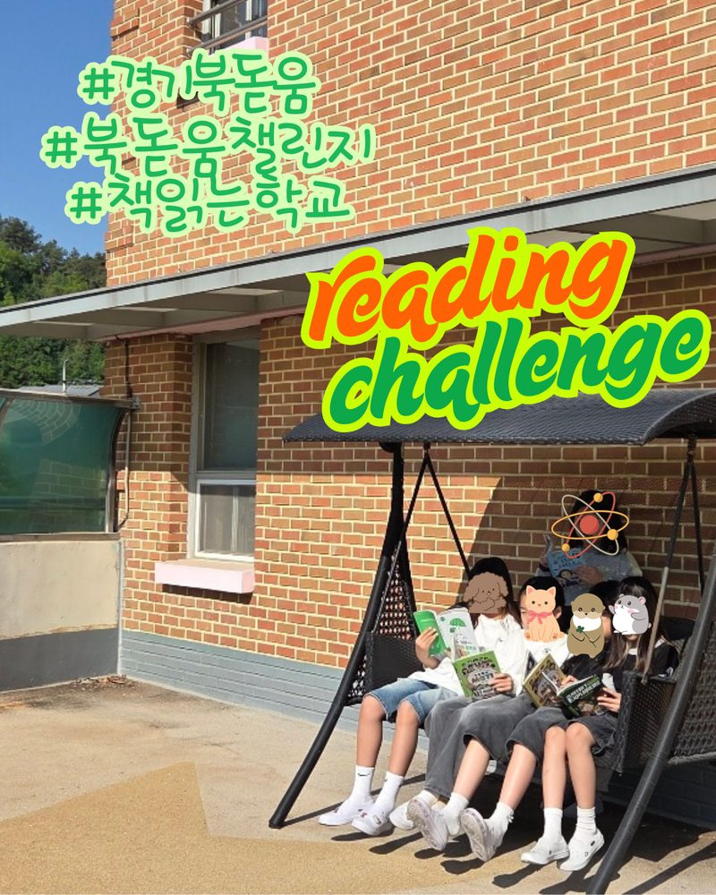
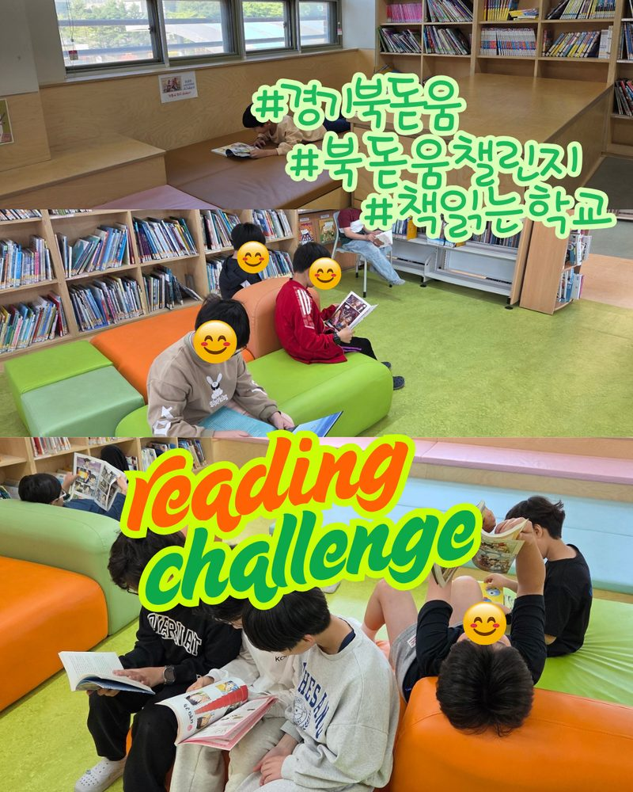
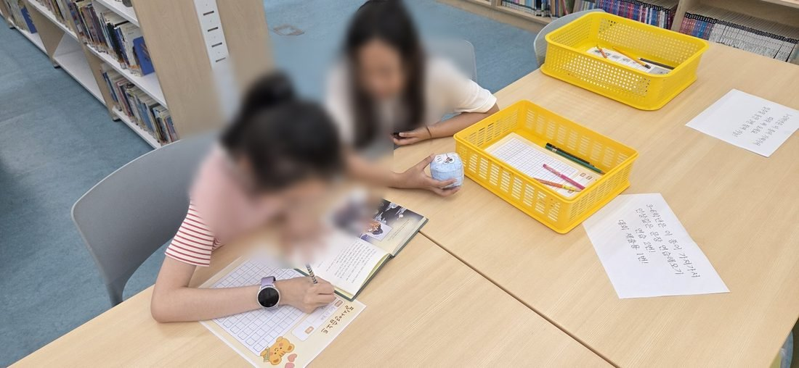
✍️ 이동초 한석봉을 찾습니다 · 필사 추천도서
사서선생님의 학년별 추천도서를 빌려 읽고, 마음에 드는 문장을 골라 손글씨로 써 봤어요. 정성껏 쓴 손글씨는 교보 손글씨 대회에도 응모했어요.
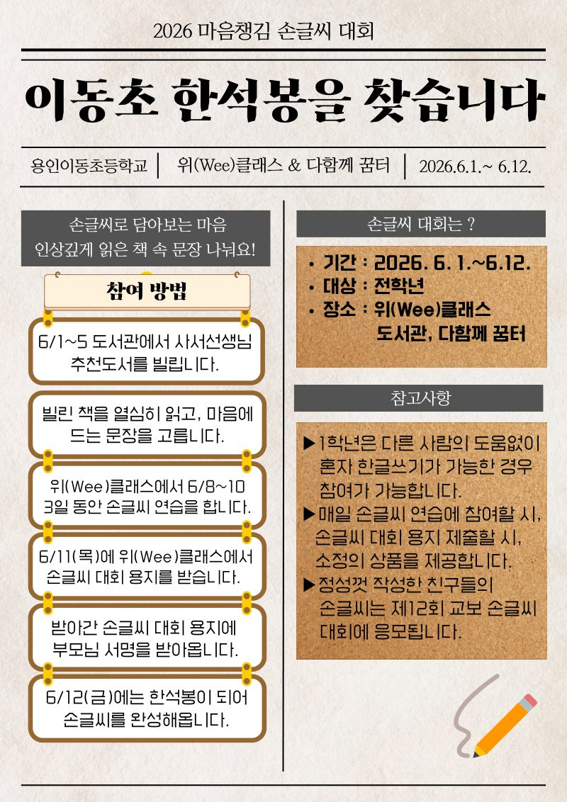
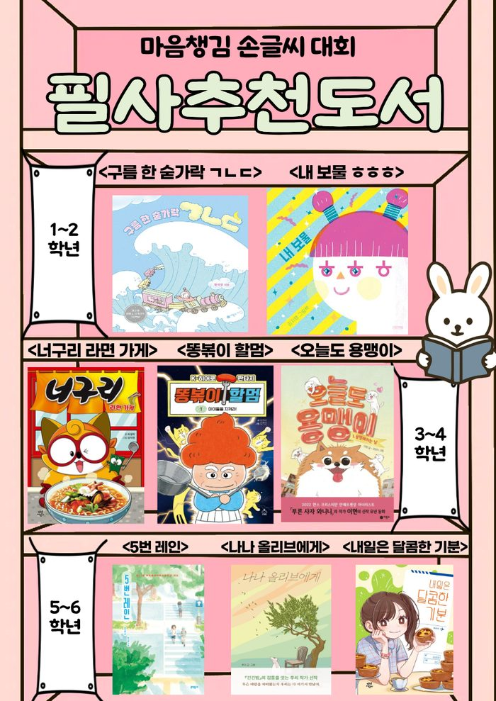
☕ 도서부 카페
매일 도서관에서 책 1권을 읽으면 아이스티 한 잔! 도서부 학생들이 직접 운영해요.
📌 나만의 책가도 책갈피 만들기
‘책가도’는 지식과 학문을 상징하는 그림 — 책과 함께 향로, 도자기, 붓 등을 그린 옛 그림을 말해요. 부스에서 반짝반짝 빛나는 자개 스티커로 나만의 책가도 책갈피를 만들어 보세요.
자개 스티커로 책·붓·도자기 등을 골라요
나만의 그림으로 책갈피를 꾸며요
꾸미기를 마치면 독서명언이 담긴 포춘쿠키를 받아요